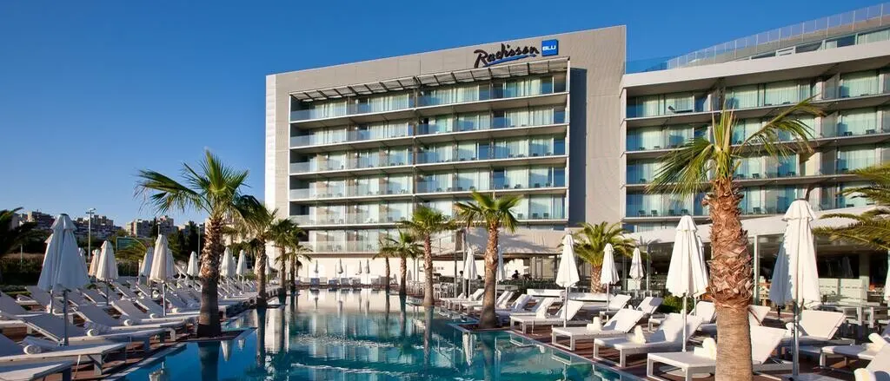

Transfer privato dall'aeroporto al Radisson Blu Resort Split
Il Radisson Blu Resort Split si trova sulla penisola di Zenta, a est del centro storico e a pochi passi dalla spiaggia di Bačvice: il comfort di un resort a portata di mano dal Palazzo di Diocleziano.

Il tuo transfer privato al Radisson Blu Resort Split
Invece di aspettare che una navetta condivisa si riempia o di contendersi un taxi con tassametro fuori dagli arrivi, un transfer privato ti porta dall'aeroporto di Spalato direttamente all'ingresso del resort. Niente cambi di veicolo né fermate condivise, e l'autista sa già esattamente dove fermarsi davanti all'hotel.
Durata del viaggio dall'aeroporto di Spalato
Il Radisson Blu si trova dall'altra parte di Spalato rispetto all'aeroporto, quindi il viaggio copre circa 23 km e dura circa 30 minuti lungo la strada costiera, oltre la città, fino alla penisola di Zenta. Nelle ore di punta il traffico in centro può aggiungere qualche minuto, ed è proprio per questo che monitoriamo il volo e programmiamo il ritiro di conseguenza.
Perché scegliere un transfer privato
Un veicolo, un prezzo fisso, indipendentemente da quante persone viaggiano insieme: una famiglia di cinque paga quanto chi viaggia da solo. In più hai il comfort porta a porta subito dopo il volo, senza code e senza fermate condivise.
- Nessuna navetta condivisa, dritti all'ingresso del resort
- Un prezzo fisso per veicolo, non per passeggero
- Ritiro flessibile, a qualsiasi ora del giorno e della notte
- Veicoli spaziosi per famiglie e gruppi
Accoglienza agli arrivi
Appena atterri, l'autista ti aspetta nella sala arrivi con un cartello con il tuo nome, pronto ad aiutarti con i bagagli e ad accompagnarti all'auto. Monitoriamo il volo in tempo reale, quindi un atterraggio anticipato o in ritardo non cambia nulla. Nessun costo aggiuntivo per un ritardo ragionevole.
Prezzo fisso, tutto incluso
Il prezzo è fissato prima del viaggio in base al veicolo scelto, non al tassametro, e copre già pedaggi, carburante e accoglienza agli arrivi. Paghi esattamente quanto ti abbiamo indicato, senza aggiunte a fine corsa.
Calcola il prezzo fissoRadisson Blu Resort Split
Il Radisson Blu Resort Split occupa una tranquilla penisola verde vicino a Bačvice, la spiaggia cittadina più vivace di Spalato, e offre camere vista mare, una piscina all'aperto, una spa e un rooftop bar affacciato sull'Adriatico. È una base comoda per unire mare e visite: Palazzo di Diocleziano, Riva e centro storico sono a breve distanza a piedi o in auto, così gli ospiti hanno i servizi di un resort con la città a portata di mano.
Così vicino a Spalato è facile anche esplorare il resto della costa: guarda gli altri nostri percorsi dall'aeroporto di Spalato o aggiungi un'escursione privata ai Laghi di Plitvice o al Parco nazionale di Krka durante il soggiorno al resort.
Domande frequenti
Quanto dura il transfer dall'aeroporto di Spalato al Radisson Blu Resort Split?
Con traffico normale il viaggio dura circa 30 minuti, per circa 23 km dall'aeroporto, attorno a Spalato, fino alla penisola di Zenta.
Quanto costa un transfer privato al Radisson Blu Resort Split?
Il prezzo esatto dipende dal veicolo scelto ed è fissato prima del viaggio, senza costi nascosti: inserisci i tuoi dati nel modulo della home page per un preventivo immediato.
L'autista aspetta se il mio volo è in ritardo?
Sì. Monitoriamo il tuo volo in tempo reale e adeguiamo automaticamente il ritiro, senza costi aggiuntivi per un ritardo ragionevole.
Posso prenotare anche il ritorno in aeroporto?
Sì, scegli "Andata e ritorno" quando prenoti per organizzare entrambe le tratte insieme, con uno sconto automatico del 5% sul prezzo totale.
Quali veicoli sono disponibili per il transfer al Radisson Blu Resort Split?
Offriamo una berlina Škoda Superb (1–4 passeggeri), una Mercedes-Benz Classe V (1–7 passeggeri) e un van Renault Trafic (1–8 passeggeri), tutti a prezzo fisso per veicolo.